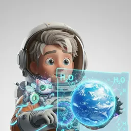

STELLARSCRIBE
STELLARSCRIBE
CIENCIATECNOLOGÍAINGENIERÍAARTEMATEMÁTICA
Academia de Clima Espacial
Aldrin y su gato regresan a la Tierra, pero el Sol está muy activo. Completa cuatro misiones para entender las tormentas solares con datos reales.
¡Hola, cadete! Soy el gato de Aldrin. Hoy el Sol tiene muchas manchas. ¿Me ayudas a proteger la nave?

☀️
Manchas solares—
💨
Viento solar—
🧭
Índice Kp—
🔄
Ciclo solar—
📈 El ciclo solar de verdad
Fuente: SILSO🚀 Misiones
🍎 Guía para docentes
Cada misión dura entre 10 y 15 minutos. Funciona en computadora, tablet o celular, en parejas o proyectada para toda la clase. Al terminar, cada misión muestra una pregunta para conversar.
tiempo (h) = 150 000 000 km ÷ velocidad (km/s) ÷ 3600